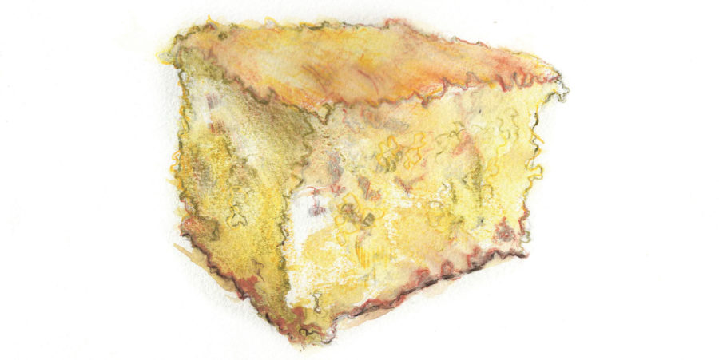

RIGHT NOW is when we need cornbread the most. The fresh, sweet corn of summer is far in the past, as are vine-ripened tomatoes, okra, and green beans. Springtime strawberries and crisp asparagus will surely return soon, but for now we must be practical. We must seek out what comforts we can, even in small measures. We can conjure up a hint of that sweet summer corn flavor through its preserved analogue-dried kernels crushed, stored, and eventually brought back to life in a pan of cornbread.

Yes, cornbread. It's probably not the first thing you think of when naming comfort food. It's not mac and cheese, nor meatloaf or pot roast-those humble but proud staples of the home kitchen and meat and three. But there's plenty to be said on behalf of a pan of cornbread. For starters, its roots run deep, for corn was not only America's native grain but, in many parts, the very stuff of subsistence. In the South, where wheat was rare and expensive, corn sustained families from day to day. No one ate beef or pork roasts on a regular basis. Fried chicken was a luxury for special occasions. But cornbread-or corn pone, johnny cakes, corn dodgers, or any of the myriad variations on baked or fried cornmeal batter-that was the daily bread.
This doesn't mean that cornbread is mere survivalist food. It's the perfect companion for so many other comforting foods, especially during the wintertime. You can serve it with long-simmered collards and their dark, mysterious potlikker, or use it to sop up a bowl full of black-eyed peas slow-simmered with smoky bacon and onions, where the flavor of each ingredient merges and melds with the others for a rich, complex broth.
In times of uncertainty and anxiety, the natural response is to draw closer to one's family. To cook for them. To share food with them. To make them cornbread.
Put a heavy cast-iron skillet in a cold oven, then turn the dial and allow the two to heat together, warming the kitchen as they go. Into a mixing bowl goes the pale yellow meal, followed by bright white flashes of baking soda, powder, and salt, and finally a beaten egg and a cup of tart buttermilk. The heated pan sizzles and hisses when the thick batter hits the searing black surface. A sharp, rich aroma leaps from the iron, and into the oven it goes.
Just before the pan is ready to be removed from the oven, I like to step outside into the cold winter air and pause for a minute or two, then step back inside to revel in the welcoming warmth and take in the scent of the baking grains that fills the entire downstairs. My go-to recipe is the one my paternal grandmother used in West Point, Georgia. Shortly after my father and Minnesota-born mother married, my grandmother wrote the recipe down and gave it to my mother, and my mother, in turn, wrote it down for me on an index card when I was in my early twenties.
My mother gave me my first cast-iron skillet around the same time because she said (rightly) that to cook proper cornbread, you needed to use cast iron. It was a brand new 8-inch Lodge pan, and I seasoned it with oil, gave it its first long bake, and abjured soap and scouring until it developed the proper jet black hue. I still use that pan today when I make a small batch of cornbread, and I now have a larger skillet that I use for bigger batches. It belonged to my grandmother and it came into my possession after she passed away-a #9 size from the Griswold Manufacturing Company of Erie, Pennsylvania. The company went defunct in 1957, but the pan still does the trick.
For me, I suppose, cornbread is where the present meets the past-my own past, indeed, but the South's past too, and the American past most of all. It does so in many different ways-in the ingredients, the recipe, the tools used, and the context in which it is eaten. In times of uncertainty and anxiety, the natural response is to draw closer to one's family. To cook for them. To share food with them. To make them cornbread. And that's where the problem arises, for no one else in my household likes my grandmother's cornbread recipe-not my wife, nor my 16- and 10-year-old sons. The poodle will eat it in a pinch, but he far prefers a few bits of diced pork or a couple shreds of cheddar.
And that's because there's not a grain of sugar in the recipe. The boys still have the sweetness-craving palates of youth, and they find the thick crumb and subtle sweetness from the corn alone to be bland. My wife has a similar complaint. They aren't swayed by my arguments that, a century and half ago, no Southerners put sugar in cornbread. They don't care that in the old days, when the kernels were ground with stones into irregular coarse meal instead of bashed into powder by steel roller mills, cooks didn't need to add sugar to cornbread because the corn itself held plenty of natural sweetness. My wife grew up eating her own grandmother's cornbread, the kind made in the middle of the twentieth century down in that triangle of counties where Alabama, Georgia, and Florida meet. She lightened the finely-ground yellow cornmeal with wheat flour and laid in enough sugar to make it as sweet as cake. For my wife, that version remains the gold standard.
There's no point in trying to compete with someone's dead granny. Sometimes you must make concessions and tolerate a few notions that you know to your core to be wrong. If it gets us all to sit down at the table together and enjoy a warm, comforting meal in the low, dark days of winter-well, isn't it worth the extra effort of making two different pans?